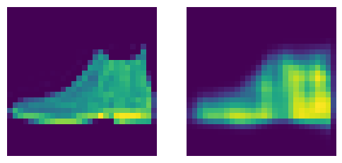

def fit(epochs, model, loss_func, opt, train_dl, valid_dl, tqdm_=False):
"""Modified fit function for reconstruction tasks"""
progress = tqdm if tqdm_ else lambda x: x
for epoch in range(epochs):
model.train()
trn_loss, trn_count = 0.0, 0
for xb, _ in progress(train_dl):
xb = to_device(xb)
loss = loss_func(model(xb), xb) # 👈
bs, *_ = xb.shape
trn_loss += loss.item() * bs
trn_count += bs
loss.backward()
opt.step()
opt.zero_grad()
model.eval()
with torch.no_grad():
tst_loss, tot_acc, tst_count = 0.0, 0.0, 0
for xb, _ in progress(valid_dl):
xb = to_device(xb)
pred = model(xb)
bs, *_ = xb.shape
tst_count += bs
tst_loss += loss_func(pred, xb).item() * bs
print(
f"{epoch=}: trn_loss={trn_loss / trn_count:.3f}, tst_loss={tst_loss / tst_count:.3f}"
)Autoencoders
Training a slightly more complicated model
Adapted from:
Autoencoders learn a bottleneck representation that can be “reversed” to reconstruct the original image.

Typically, they are not used on their own but are used to produce compressed representations.
We’ve seen how a convolutional neural network can produce a simple representation of an image: that is, the categorical probability distribution over all the fashion classes. How do reverse this process to reconstruct the original image.
Transpose or “Stride \(\frac{1}{2}\)” convolutions work, but this notebook focuses on the nearest neighbor upsampling. This upsamples the activations from the previous layer and applies a convolutional layer to restore detail.
deconv
deconv (c_in, c_out, ks=3, act=True)
We need to modify the fit function because the loss function is no longer of the label.
get_model
get_model ()
autoencoder = get_model()
autoencoderSequential(
(0): ZeroPad2d((2, 2, 2, 2))
(1): Sequential(
(0): Conv2d(1, 2, kernel_size=(3, 3), stride=(2, 2), padding=(1, 1))
(1): ReLU()
)
(2): Sequential(
(0): Conv2d(2, 4, kernel_size=(3, 3), stride=(2, 2), padding=(1, 1))
(1): ReLU()
)
(3): Sequential(
(0): Conv2d(4, 8, kernel_size=(3, 3), stride=(2, 2), padding=(1, 1))
(1): ReLU()
)
(4): Sequential(
(0): UpsamplingNearest2d(scale_factor=2.0, mode='nearest')
(1): Conv2d(8, 4, kernel_size=(3, 3), stride=(1, 1), padding=(1, 1))
(2): ReLU()
)
(5): Sequential(
(0): UpsamplingNearest2d(scale_factor=2.0, mode='nearest')
(1): Conv2d(4, 2, kernel_size=(3, 3), stride=(1, 1), padding=(1, 1))
(2): ReLU()
)
(6): Sequential(
(0): UpsamplingNearest2d(scale_factor=2.0, mode='nearest')
(1): Conv2d(2, 1, kernel_size=(3, 3), stride=(1, 1), padding=(1, 1))
)
(7): ZeroPad2d((-2, -2, -2, -2))
(8): Sigmoid()
)with fashion_mnist() as (_, tst_dl):
xb, _ = next(iter(tst_dl))assert xb.shape == autoencoder(xb.to(def_device)).shapemodel = get_model()
with fashion_mnist() as dls:
opt = optim.AdamW(model.parameters(), lr=0.01)
fit(10, model, F.mse_loss, opt, *dls)epoch=0: trn_loss=0.052, tst_loss=0.028
epoch=1: trn_loss=0.024, tst_loss=0.021
epoch=2: trn_loss=0.020, tst_loss=0.019
epoch=3: trn_loss=0.019, tst_loss=0.018
epoch=4: trn_loss=0.018, tst_loss=0.018
epoch=5: trn_loss=0.018, tst_loss=0.018
epoch=6: trn_loss=0.018, tst_loss=0.018
epoch=7: trn_loss=0.017, tst_loss=0.017
epoch=8: trn_loss=0.017, tst_loss=0.018
epoch=9: trn_loss=0.017, tst_loss=0.017pred = model(xb.to(def_device))
show_images([xb[0, ...].squeeze(), pred[0, ...].squeeze()])
That looks…not great.
At this point, Jeremy pauses to go over building a framework to iterate on this problem more quickly. Continued in the next notebook.